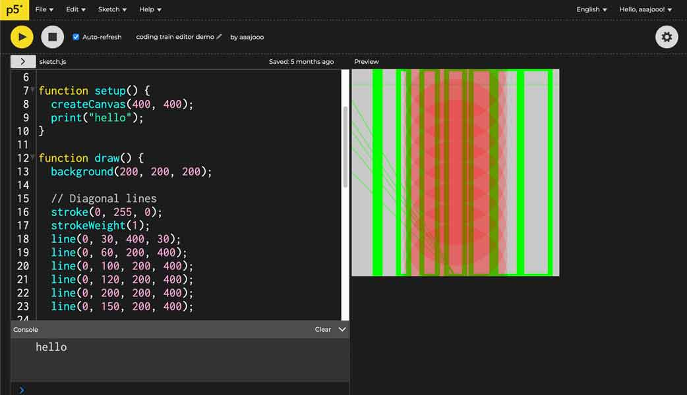
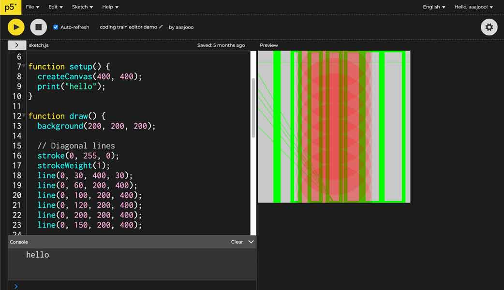

🗓 4 May 2022
Assignment: I wanted to learn P5.js because it is open source and has many creative applications. I started by watching a tutorial on youtube called The Coding Train where you can find step by step video instructions to start using P5.js. I got five videos deep, and was able to learn how to code not only visual interfaces, but a bit of interactivity. As you can see in the gif, I accomplished a mouse tracking code which recorded the movements of my mouse into a graphic interface. Ultimately, I would like to use this application to code a more interactive web interface for my website.


Interface & Application Programming
In this class, we learned about many platforms and resources that could be useful to us in programming applications and building interfaces for our projects. Here is a list of what we reviewed:- Processing - a tool to create user interfaces via normal media of a computer and organize communication between different devices based on the Java programming language.
- P5.js - a web-based tool for creating user interface and creative coding, based on JavaScript.
- Blender - can do 'everything'. has a python interface that's powerful.
- MIT App Inventor - an easy open source tool to create phone applications.
- A Frame - open source tool used for prototyping VR and AR environments.
- Node Red - flow-based development tool for visual programming, tools for controlling dataflows in a graphic way, has modules for building dashboards.
Serial Communications
Key things to consider:- what do I send and how do I send it?
- how do you prepare your data?
- which type of data are you sending?
- which protocol will you use?
Assignment: I wanted to learn P5.js because it is open source and has many creative applications. I started by watching a tutorial on youtube called The Coding Train where you can find step by step video instructions to start using P5.js. I got five videos deep, and was able to learn how to code not only visual interfaces, but a bit of interactivity. As you can see in the gif, I accomplished a mouse tracking code which recorded the movements of my mouse into a graphic interface. Ultimately, I would like to use this application to code a more interactive web interface for my website.
